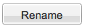
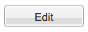

Help files for My Data tab
My Data
The My Data tab provides a listing of all folders and files present within the current user’s account that are applicable to the perspective the user has selected. For example, a user selecting Trait Evolution will see files that are relevant to scientific problems that can be performed utilizing the tool(s) within that perspective. Movement to another perspective will filter the sum total of files available to the user to only those files relevant to the perspective chosen.
 Folder icons listed in the Available Files window can be “double-clicked” to reveal files contained within. Folders can also be opened by selecting the small triangle located next to the icon. This triangle only displays when files are contained within the folder.
Folder icons listed in the Available Files window can be “double-clicked” to reveal files contained within. Folders can also be opened by selecting the small triangle located next to the icon. This triangle only displays when files are contained within the folder.
Highlighting a folder or file in the available files table and selecting the Rename icon brings up a window prompt that allows the user to specify a new name for a folder or a file. Renaming is supported for a single file or folder at a time.
Names are limited to 250 characters that are alphanumeric. Only allowed non-alphanumeric characters are dash (-), underscore (_) and period (.). Spaces are allowed as characters within the name, however spaces cannot be the first, last or only character in a name.
Highlighting a folder or file in the available files table and selecting the delete icon allows the user to delete the folder and all of its contents or to delete individual files. Multiple file delete is supported with the following actions:
For Mac users: select initial file and hold <command> key while selecting subsequent files
For PC users: select initial file and hold <control> key while selecting subsequent files.
Highlighting a file or multiple files and selecting the edit icon opens the selected file(s) in the “Editor” tab. Selection of multiple files is supported with the following actions:
For Mac users: select initial file and hold <command> key while selecting subsequent files
For PC users: select initial file and hold <control> key while selecting subsequent files.
Sorting of data
To sort files within the available files table, click the right side of the column header that you wish to sort. Files can be sorted in ascending or descending order. Selecting the <Columns> icon in the drop-down menu will eliminate columns from view within the available files table or add back previously eliminated columns.
Columns can be added or eliminated by selecting or deselecting the check boxes next to the name of the label on which action will be taken.
Columns
Columns describe the following items:
-
Name- name of file. Name will reflect the name of the file at upload or the name given by the user upon renaming file.
-
Description- description of the contents of the file (ie. Newick, Nexus with tree and character block, CSV with trait data)
-
Uploaded- indication of date and time of upload.